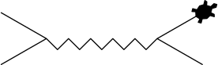

Classes¶
Voor een snelle meting is het script dat je geschreven hebt bij opdracht Pythondaq: quick 'n dirty meting, opdracht Pythondaq: herhaalmetingen en opdracht Pythondaq: CSV prima! Maar als de meetapparatuur ingewikkelder wordt (meer verschillende commando's) of je wilt meer aanpassingen doen, dan is het wel lastig dat je op allerlei plekken de commando's opnieuw moet programmeren — en eerst moet opzoeken. Als je een nieuw script schrijft moet je opnieuw goed opletten dat je de goede terminator characters gebruikt, etc. Het is wat werk, maar toch heel handig, om je code op te splitsen en een class te schrijven.
Een class is eigenlijk een groep functies die je bij elkaar pakt en die met elkaar gegevens kunnen delen. Zodra een programma wat complexer wordt merk je dat het fijn kan zijn om variabelen op te sluiten in geïsoleerde omgevingen. We gaan eerst kijken hoe we een class gebruiken met behulp van de class Turtle. Met deze class kan je een tekening maken in Python, met behulp van functies geef je aan hoe de pen over het papier moet bewegen.
Aanroepen van een class¶
Het aanroepen van een class lijkt veel op het aanroepen van een functie:
Stel je hebt de functie def calculate_squares_up_to(max_number):. Dan roep je die aan met result = calculate_squares_up_to(5). Hierbij is calculate_squares_up_to de naam van de functie en result de variabele waar de uitkomst heen gaat. Achter de naam van de functie, calculate_squares_up_to, komen tussen ronde haakjes de variabelen te staan die worden meegegeven aan de functie, in dit geval 5. Hierdoor wordt het kwadraat tot het getal 5 uitgerekend.
Bij het aanroepen van een class doe je iets soortgelijks. In de variabele master_oogway gaat de uitkomst
van de class, dat is in dit geval een collectie van functies — de zogeheten methods van de class — (en variabelen). De variabele master_oogway noem je een instance van de class Turtle. Achter de naam van de class, Turtle, komen tussen ronde haakjes de variabelen te staan die worden meegegeven aan class, in dit geval "turtle". Hierdoor heeft de pen de vorm van een schildpad in plaats van een pijl.
Meerdere instances
Net zoals je een functie vaker kunt aanroepen, kan je ook meerdere instances van een class aanmaken. Je kunt meerdere instances hebben van dezelfde class, bijvoorbeeld voor verschillende schildpadden:
De class Turtle is een verzameling van methods waaronder forward() en left(). Zoals hierboven staat beschreven zijn deze methods als uitkomst
van de class meegegeven aan de instance master_oogway. Je kunt daarom de methods aanroepen met de instance master_oogway:
master_oogway = Turtle("turtle")
master_oogway.forward(50)
master_oogway.left(30)
master_oogway.forward(50)
Hierin is 50 het aantal stappen en 30 de hoek in graden die de schildpad tegen de klok in draait. 
De class Turtle
Turtle zit standaard in Python, daarom kan je deze importeren met from turtle import Turtle. Je opent in GitHub Desktop de repository oefenopdrachten en opent deze repository in Visual Studio Code. Je maakt een bestand Feynman.py aan. Aangezien er nog geen environment gekoppeld is aan deze repository maak je eerst een virtual environment aan (zie opdracht Environment aanmaken). Teken nu met een schildpad met de instancenaam master_oogway een Feynman diagram.
ECPC├──
oefenopdrachten├──
Feynman.py└── •••
└──
pythondaq└── •••
Scherm met schildpad verdwijnt
Na het uitvoeren van het script sluit Python het scherm van de schildpad. Voeg de regel master_oogway.screen.mainloop() toe om het scherm te laten staan en handmatig af te sluiten.
Pseudo-code
from turtle import Turtle
# create instance of class Turtle
master_oogway = Turtle("turtle")
# use forward() and left() to create a Feynman diagram

Checkpunten
- De class
Turtlewordt geïmporteerd uit de moduleturtle. - De instance is van de class
Turtlemet hoofdletter T. - De naam van de instance is
master_oogway. - Om de schildpad te laten bewegen roep je de method
forward()ofleft()van de instance aan.
Projecttraject
- De class
Turtle - De method
__init__(self) - Een class maken
-
self= instance - Opbouw van een class
Het maken van een class¶
De class Turtle is behoorlijk complex en het gaat te ver om de class hier helemaal te gaan bespreken. Voor een goed begrip van classes ga je daarom kijken naar een versimpelde weergave van de class Turtle.
Een class maak je aan met de regel class Turtle:. 1 Daaronder komt ingesprongen de inhoud van de class. De class bestaat uit methods. De eerste method __init__() is een speciale method (voor meer informatie zie: dunder methods), dit is de initializer waarin alle taken staan die uitgevoerd worden zodra de class gebruikt wordt.
class Turtle:
def __init__(self, shape):
# transform turtle into shape
def forward(self, distance):
# move turtle by distance
def left(self, angle):
# turn turtle counterclockwise
# by angle in degrees
De eerste parameter van de __init__()-method en van alle andere methods is self, daarna komen — indien nodig — andere parameters die in de method nodig zijn. Verder op in dit hoofdstuk leer je meer over de speciale parameter self.
Het aanmaken van een class lijkt in een aantal opzichten op het aanmaken van een functie:
De method __init__(self)
Achter de naam van de class: Turtle, komen tussen ronde haakjes de variabelen die worden meegegeven aan de __init__()-method (self niet meegerekend), de parameter shape krijgt dus de variabele "turtle" toegewezen.
Stel dat de __init__()-method geen extra parameters mee krijgt, zoals in onderstaand geval. Hoe maak je dan een instance aan van de class?
Projecttraject
- De class
Turtle - De method
__init__(self) - Een class maken
-
self= instance - Opbouw van een class
Een class maken
Turtle class gebruiken om een werkende class te maken die weliswaar geen schildpad laat lopen maar wel tekst print!
Maak een bestand fake-turtle.py waarin je zelf een class Turtle maakt. Zodra de class Turtle gebruikt wordt, print je tekst die aangeeft welke vorm de pen heeft. Wanneer de methods forward en left worden aangeroepen print je een tekst die aangeeft hoeveel stappen de turtle zet of hoeveel graden de turtle draait.
ECPC├──
oefenopdrachten├──
fake-turtle.py├──
Feynman.py└── •••
└──
pythondaq└── •••
Pseudo-code
TestcodeCheckpunten
- Wanneer je een instance aanmaakt van de class
Turtlemoet je een parameter meegeven. - Wanneer je een instance aanmaakt van de class
Turtlewordt in de terminal geprint welke vorm de turtle heeft. - Wanneer je de method
forward()aanroept, moet je een parameter meegeven. - Wanneer je de method
forward()aanroept, wordt in de terminal geprint hoeveel stappen de turtle zet. - Wanneer je de method
left()aanroept, moet je een parameter meegeven. - Wanneer je de method
left()aanroept, wordt in de terminal geprint hoeveel graden de turtle draait.
Projecttraject
- De class
Turtle - De method
__init__(self) - Een class maken
-
self= instance - Opbouw van een class
De speciale parameter self¶
Een class method is vrijwel gelijk aan een normale functie, behalve dat een class method als eerste de parameter self verwacht. Aan deze parameter wordt de eigen instance van de class meegegeven wanneer je de method aanroept. Laten we kijken naar wat die instance van de class eigenlijk is. De instance van een class is de collectie van methods (en variabelen).
Als je de functie calculate_squares_up_to(max_number) aanroept met result = calculate_squares_up_to(5), dan komt hetgeen dat teruggegeven wordt, squares, in de variabele result terecht. Bij een class is er geen return-statement maar komt de hele inhoud van de class, dus alle methods (en variabelen), in de instance master_oogway terecht.
Gelukkig hoef je de instance niet steeds zelf mee te geven aan een method. Wanneer je een method aanroept wordt impliciet de instance als eerste parameter meegegeven. Maar waarom zou je die instance meegeven aan een method als je die aanroept? Omdat de instance alle methods en variabele bevat, kan je de informatie die daarin is opgeslagen in elke method gebruiken.
Stel je maakt een nieuwe method do_kungfu_move waarin je forward() en left() willen gebruiken:
class Turtle:
def __init__(self, shape):
# transform turtle into shape
def forward(self, distance):
# move turtle by distance
def left(self, angle):
# turn turtle counterclockwise
# by angle in degrees
def do_kungfu_move(self):
# do kungfu move
self.forward(130)
self.left(350)
self.forward(60)
Als je de method do_kungfu_move aanroept met master_oogway.do_kungfu_move(), dan geeft python automatisch de instance master_oogway mee aan de method. De parameter self is dus nu gelijk aan de instance master_oogway, daarmee doet self.forward(130) hetzelfde als master_oogway.forward(130).
self = instance
Het begrip self is een vaag begrip, maar je kunt met print-statements zien wat self is. Voeg aan fake_turtle.py de method do_kungfu_move() toe. En voeg aan de method ook een print-statement toe om de variabele self te printen. Gebruik hiervoor: print(f"{self=}"). Gebruik de instance master_oogway om de method do_kungfu_move aan te roepen. De variabele self is, als het goed is, gelijk aan de instance master_oogway. Om dit te controleren voeg je ook een print-statement toe om master_oogway te printen: print(f"{master_oogway=}").
Je hebt nu twee keer een object geprint. Dat ziet er misschien wat gek uit, maar je kunt er wel nuttige informatie uithalen. Aan het eind zie je getallen met letters staan, dat is het geheugenadres waar het object is opgeslagen. Als je het geheugenadres van de instance master_oogway vergelijkt met die van de variabele self dan zie je dat deze hetzelfde zijn. Dat betekent dat de objecten ook dezelfde objecten zijn, self is dus gelijk aan master_oogway!
self is de instance zelf. Met andere woorden: als je een andere instance gebruikt, dan verandert self mee. Om dit te testen maak je een instance toby aan, de tweede instance. Roep de method do_kungfu_move aan met toby. Je ziet dat het geheugenadres van de variabele self nu anders is dan de vorige self. Je controleert of het geheugenadres overeenkomt met het geheugenadres van de instance toby.
Pseudo-code
class Turtle:
def __init__(self, shape):
# transform turtle into shape
...
def forward(self, distance):
# move turtle by distance
...
def left(self, angle):
# turn turtle counterclockwise
# by angle in degrees
...
def do_kungfu_move(self):
# do kungfu move
self.forward(130)
self.left(350)
self.forward(60)
# print self
print(f"{self=}")
master_oogway = Turtle("turtle")
print(f"{master_oogway=}")
master_oogway.do_kungfu_move()
toby = Turtle("turlte")
print(f"{toby=}")
toby.do_kungfu_move()
(ECPC) > python fake_turtle.py
master_oogway=<__main__.Turtle object at 0x10530b890>
self=<__main__.Turtle object at 0x10530b890>
toby=<__main__.Turtle object at 0x103377980>
self=<__main__.Turtle object at 0x103377980>
Checkpunten
- Het geheugenadres van
master_oogwayis gelijk aan het geheugenadres vanself. -
master_oogwayis niet gelijk aanselfals de method met een andere instance wordt aangeroepen.
Projecttraject
- De class
Turtle - De method
__init__(self) - Een class maken
-
self= instance - Opbouw van een class
Instance attribute¶
De instance van een class bevat niet alleen alle methods, maar kan ook variabelen bevatten. In het voorbeeld hieronder voegen we de variabele quote toe in de __init__-method en daarmee ook aan de instance. Dit wordt een instance attribute genoemd.
class Turtle:
def __init__(self, shape):
# transform turtle into shape
self.quote = "Yesterday is history, Tomorrow is a mystery, but Today is a gift. That is why it is called the present"
...
quote is nu onderdeel van de instance. We kunnen die oproepen binnen elke method met self.quote maar ook buiten de class:
(ECPC) > python turtles.py
"Yesterday is history, Tomorrow is a mystery, but Today is a gift. That is why it is called the present"
Opbouw van een class
Bekijk onderstaande code. Wat doet deze code precies? Verplaats daarna de onderdelen naar de juiste plek in de code. Twijfel je of je nog weet wat een module is kijk dan voor meer informatie in de paragraaf modules.
Projecttraject
- De class
Turtle - De method
__init__(self) - Een class maken
-
self= instance - Opbouw van een class
Classes importeren
Wat is nu het praktisch nut van classes en methods gebruiken in plaats van functies? Want in plaats van
heb je nu en dat is even lang. Het grote voordeel ontstaat pas wanneer de class ingewikkelder wordt en meer data gaat bewaren. Ook kun je de class in een ander pythonbestand (bijvoorbeeldanimals.py) zetten en alle functionaliteit in één keer importeren met:
Op deze manier kun je code ook makkelijker delen en verspreiden. Zodra je een class definieert zal Visual Studio Code tijdens het programmeren je code automatisch aanvullen. Zodra je typt master_oogway.f hoef je alleen maar op Tab te drukken en Visual Studio Code vult de rest aan.
Class Particle

Particle gemaakt in een niew bestand particle.py. Als je een instance aanmaakt van de class Particle kun je de naam van het deeltje meegeven en de spin (bijvoorbeeld: 0.5). De instance attributes van deze class zijn 'name' en 'spin'. Er is ook een method is_up_or_down() om terug op te vragen wat de spin van het deeltje op dat moment is (spin omhoog/positief of spin omlaag/negatief). Door de method flip() op te roepen wordt de spin van het deeltje omgekeerd.
ECPC├──
oefenopdrachten├──
particle.py└── •••
└──
pythondaq└── •••
Pseudo-code
# class Particle:
# def __init__(self, name, spin):
# make instance attribute from name
# make instance attribute from spin
#
# def is_up_or_down():
# print up when spin is positive
# print down when spin is negative
# ...
#
# def flip():
# make spin positive if spin is negative
# make spin negative if spin is positive
# ...
Checkpunten
- Naam en spin worden aan instance meegegeven.
- Naam en spin zijn instance attributes en kunnen zowel binnen een method als buiten de class opgeroepen worden.
- Method
is_up_or_down()print 'up' als de spin positief is en 'down' als het negatief is. - Method
flip()maakt de spin positief als de spin negatief is, en negatief als de spin positief is.
Projecttraject
- Class
Particle
Class ProjectileMotion
ProjectileMotion. De beginsnelheid en de lanceerhoek bewaar je steeds met de method add_launch_parameters(). Om in een keer alle beginsnelheden op te vragen gebruik je de method get_initial_velocities(). Om alle lanceerhoeken op te vragen gebruik je de method get_launch_angles(). Op basis van de gegevens (en door de luchtweerstand te verwaarlozen) bepaal je de vluchtduur en het bereik van de raket. Je kunt de vluchtduur van alle vluchten opvragen met de method get_time_of_flights() en het bereik van alle vluchten met get_flight_ranges(). Zie het tabblad check voor de nodige vergelijkingen.
ECPC├──
oefenopdrachten└── •••
├──
pythondaq└── •••
└──
projectile-motion├──
water-rocket.py└── •••
Pseudo-code
# class ProjectileMotion
# ...
# __init__
# ...
# add_launch_parameters
# ...
# get_initial_velocities
# ...
# get_launch_angles
# ...
# get_time_of_flights
# ...
# get_flight_ranges
# ...
speedy = ProjectileMotion()
speedy.add_launch_parameters(v=28, angle=68)
speedy.add_launch_parameters(v=11, angle=15)
v = speedy.get_initial_velocities()
angles = speedy.get_launch_angles()
x = speedy.get_flight_ranges()
t = speedy.get_time_of_flights()
print(f"{v=}")
print(f"{angles=}")
print(f"{x=}")
print(f"{t=}")
(ECPC) > python water_rocket.py
v=[28, 11]
angles=[68, 15]
x=[55.51602063607072, 6.167176350662587]
t=[5.292792645845066, 0.5804300705663054]
Checkpunten
- De code bevindt zich in een GitHub-repository .
- De method
add_launch_parametersverwacht een beginsnelheid in meter per seconde en een lanceerhoek in graden. - De method
get_initial_velocitiesgeeft een lijst terug met alle beginsnelheden van de ingevoerde parameters. - De method
get_launch_anglesgeeft een lijst terug met alle lanceerhoeken van de ingevoerde parameters. - De time-of-flight wordt berekend met 2 * v_y / g.
- De beginsnelheid in de y-richting wordt berekend met v_y = v * sin(lanceerhoek).
- Het bereik wordt berekend met time_of_flight * v_x.
- De beginsnelheid in de x-richting wordt berekend met v_x = v * cos(lanceerhoek).
- De lanceerhoek wordt in radialen meegegeven aan de trigonometrische functies.
- De method
get_time_of_flightsgeeft een lijst terug met de vluchtduur in seconden corresponderend met de ingevoerde parameters. - De method
get_flight_rangesgeeft een lijst terug met het bereik in meters corresponderend met de ingevoerde parameters.
Projecttraject
- Class
ProjectileMotion
Raise exception
Het is niet logisch om een lanceerhoek boven een bepaalde waarde in te voeren of om een negatieve beginsnelheid mee te geven. Zorg dat in die gevallen een error afgegeven wordt. Meer informatie hierover vind je in de paragraaf Exceptions.
Subclass
Subclasses¶
Je kunt behalve een class ook een subclass aanmaken. De class Turtle heeft hele handige methods maar je kunt een specifiekere class GiantTortoise maken.
class GiantTortoise(Turtle):
def __init__(self):
super().__init__()
self.shape("turtle")
self.color("dark green")
self.turtlesize(5)
self.speed(1)
def move(self, distance):
steps = range(0, distance, 5)
i = 1
for step in steps:
self.tiltangle(i * 5)
self.forward(step)
time.sleep(1)
i = i * -1
Door de parentclass Turtle tussen ronde haakjes mee te geven aan de nieuwe subclass GiantTortoise krijgt de subclass alle functionaliteit mee van de parentclass, waaronder alle methods zoals forward(). Als je in de __init__()-method van de subclass methods of attributes wilt gebruiken van de parentclass, moet je ervoor zorgen dat de parentclass is geïnitialiseerd . Dit doe je met super().__init__(). Hierbij verwijst super() naar de parentclass en met __init__() voer je de __init__()-method van de parentclass uit. Nadat je in de __init__()-method van de subclass de eigenschappen van de reuzenschildpad hebt gedefinieerd, kun je extra functionaliteit gaan toevoegen, bijvoorbeeld de manier van bewegen met de method move().
super().__init__()
- Maak een bestand aan waarin je de subclass
GiantTortoiseaanmaakt. - Zorg dat de volgende voorbeeldcode werkt:
- Wat gebeurt er als je
super().__init__()weglaat?
Hawksbill turtle
- Maak een subclass aan voor de Hawksbill turtle.
- De Hawksbill turtle is een zeeschildpad. Maak de omgeving van de schildpad standaard blauw met
self.screen.bgcolor("cyan"). - Schrijf een method
swim()die de schildpad over het scherm laat bewegen.
-
Wanneer je de Google Style Guide2 volgt schrijf je de naam van de class in CapWords of CamelCase. ↩
-
Google. Google python style guide. URL: https://google.github.io/styleguide/pyguide.html. ↩